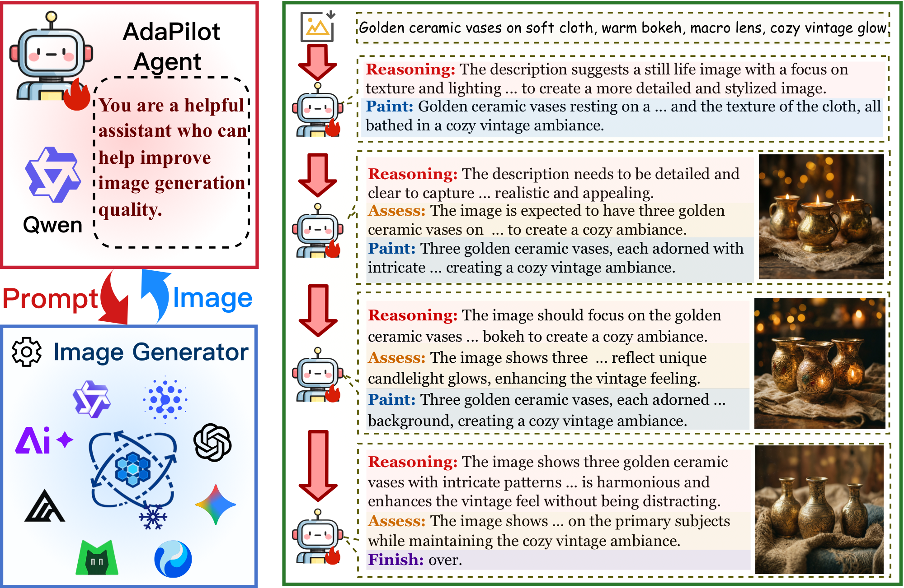
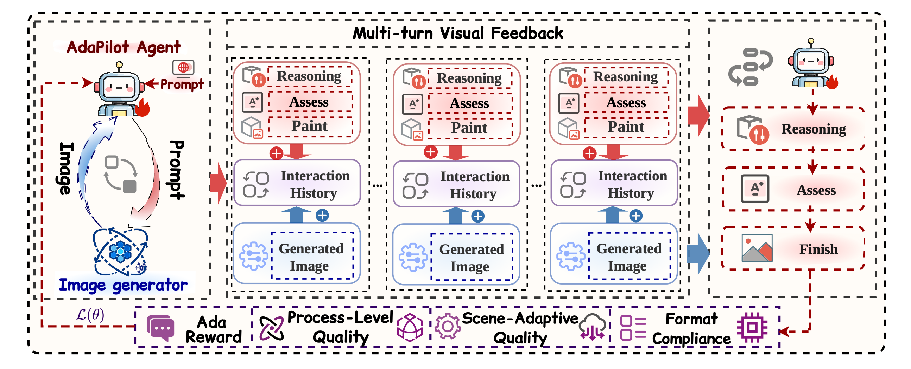
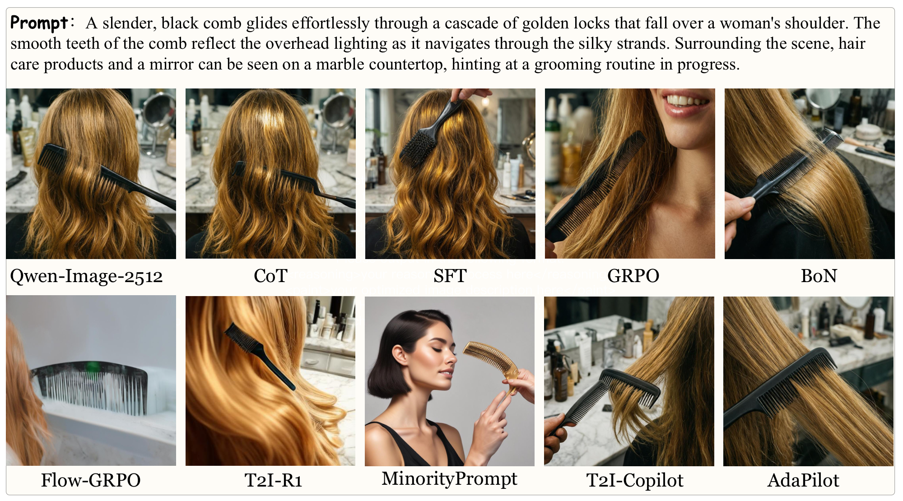
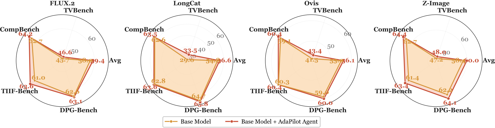
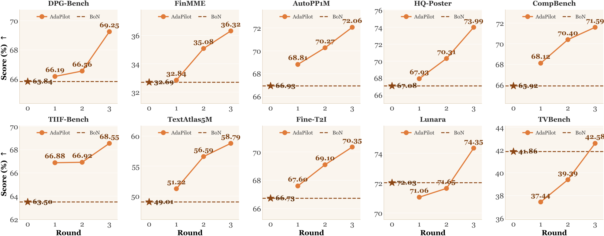

Existing methods for improving text-to-image generation quality have progressed from generator fine-tuning and prompt optimization to reinforcement learning with multi-turn visual feedback. However, existing strategies are deeply coupled with specific generators and tasks, and the learned capabilities are difficult to generalize into a universal quality optimization policy.
We propose AdaPilot, which learns a scene-adaptive, cross-generator transferable quality optimization policy by formulating multi-turn image generation as a Markov Decision Process (MDP) and optimizing it via end-to-end reinforcement learning. AdaPilot decouples the policy from generator internals to enable cross-generator transfer, introduces scene-aware rewards that adaptively align quality assessment dimensions with task semantics, and employs process-level rewards to model the evolution trajectory of image quality.
Experiment results on ten public benchmarks show that AdaPilot outperforms existing baselines in generation quality, out-of-distribution generalization, and cross-generator transfer. A single policy can be zero-shot transferred to generators unseen during training while maintaining gains, with particularly pronounced gains on weaker generators.


The MLLM agent iteratively reasons, generates optimized prompts, assesses the returned image, and autonomously decides when to terminate — forming a closed-loop visual feedback MDP.
Scene-aware rewards activate different metric subsets (CLIP-T, HPS, Aesthetic, GDino, OCR) per scene type with renormalized weights, plus a process-level monotonic improvement constraint across turns.
The policy conditions only on visual observations, fully decoupled from generator internals. A single trained policy zero-shot drives unseen generators without any retraining.



@misc{adapilot2026,
title={AdaPilot: Towards Scene-Adaptive Policy Learning for Cross-Generator Text-to-Image Quality Optimization},
author={Wenjin Liu and Fayuan Ke and Yue Lu and Zhe Cui and Anh Tuan Luu and Haoran Luo},
year={2026},
eprint={2609.29517},
archivePrefix={arXiv},
primaryClass={cs.CV},
url={https://arxiv.org/abs/2609.29517},
}